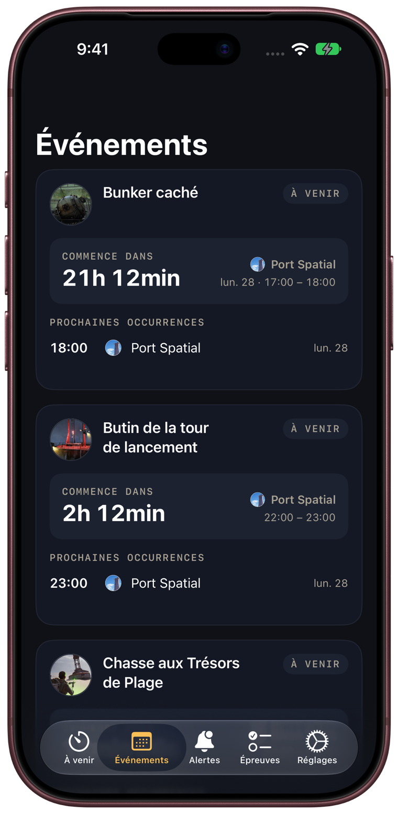
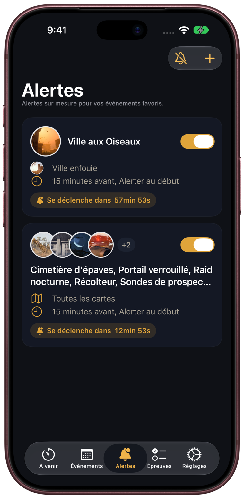
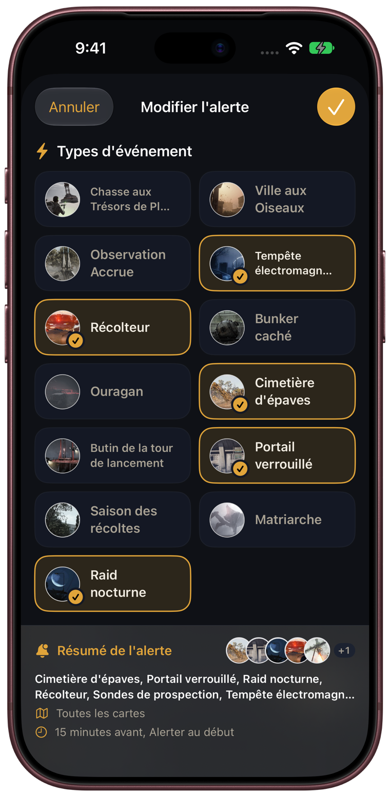
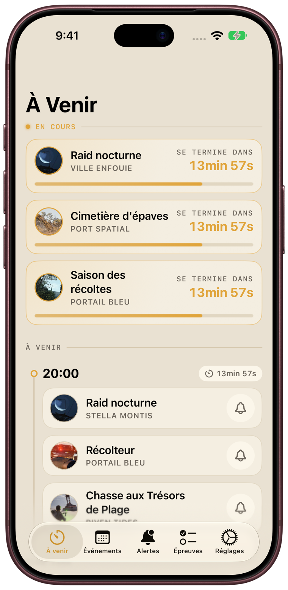

Attention, RaiderMatriarche arrive sur Stella Montis dans 10 minutes. Équipez-vous.
Commence dans
Matriarche · Stella Montis
9m 59s
Champ de bataille du barrageMatriarcheVille enfouieRaid nocturnePort SpatialRécolteurPortail BleuTempête électromagnétiqueStella MontisOuraganRiven TidesCimetière d’épavesPendola PassSaison des récoltesChamp de bataille du barrageMatriarcheVille enfouieRaid nocturnePort SpatialRécolteurPortail BleuTempête électromagnétiqueStella MontisOuraganRiven TidesCimetière d’épavesPendola PassSaison des récoltes
Ce que fait l’appTopside, d’un coup d’œil
Tout ce qui se passe Topside, sur un seul écran.
ArcTimers suit le calendrier des Map Conditions sur chaque carte. Vous savez quand monter Topside et ce qui vous y attend.
01À venir
En cours, à suivre, et plus tard dans la journée
L’onglet À venir montre chaque Map Condition en cours avec un compte à rebours jusqu’à sa fin, puis ce qui commence ensuite et ce qui arrive plus tard dans la journée. Chacune dure une heure sur une carte.
Les événements en cours, avec leurs comptes à rebours
Touchez la cloche pour être prévenu dès qu’un événement commence. Jusqu’à 5 événements suivis gratuitement.
Tirez pour actualiser à tout moment

02Événements
Sachez ce qui arrive, et où
Événements regroupe le calendrier par condition. Voyez quand commence le prochain Raid nocturne ou Récolteur, et sur quelles cartes.
Le prochain début et la carte de chaque condition
Tous les horaires à venir, avec la carte concernée
Les Épreuves de la semaine dans leur propre onglet


03Alertes personnalisées PRO
Des alertes pour vos raids
Choisissez une fois les conditions et les cartes. ArcTimers vous alerte pour chacune, sans que vous ayez à revérifier le calendrier.
15 min avant10 min avant5 min avantAu début
Combinez conditions et cartes dans une seule alerte
Suspendez toutes les alertes pendant 1 heure, jusqu’à demain matin ou jusqu’à leur réactivation
Les notifications restent programmées en arrière-plan
iPhoneiPad
Adapté à votre façon de jouer.
Tout le calendrier sur iPad, un coup d’œil sur iPhone. En mode clair ou sombre, en français ou en anglais.
iPadSombre

Clair
GratuitPro
Gratuit. Pro quand vous voulez plus.
Sans compte, sans pub, sans statistiques.
Gratuit
Tout ce qu’il faut pour suivre le calendrier.
À venir, avec les comptes à rebours en direct
Événements par condition et par carte
Épreuves de la semaine
Jusqu’à 5 événements suivis
ArcTimers PRO
Abonnement hebdomadaire ou mensuel, ou achat unique à vie. L’abonnement mensuel commence par une semaine gratuite.
Tout ce qui est gratuit
Suivi illimité
Alertes personnalisées pour toutes les conditions et cartes
Alerte 15, 10 ou 5 minutes avant, ou au début
Suspendre toutes les alertes
L’app affiche les prix dans votre devise.
FAQ
Vos questions, nos réponses.
ArcTimers est-elle faite par Embark Studios ?
Non. ArcTimers est une app compagnon non officielle, créée par des joueurs d’ARC Raiders. Elle n’est pas affiliée à Embark Studios. ARC Raiders est une marque d’Embark Studios AB.
D’où vient le calendrier ?
Des données communautaires ARC Raiders de MetaForge (metaforge.app). L’app se met à jour à l’ouverture, quand vous tirez pour actualiser, et en arrière-plan pour que vos notifications restent à l’heure.
Faut-il un compte ?
Non. Pas d’inscription, pas de pub, pas de statistiques, pas de SDK tiers. Vos événements suivis et vos alertes personnalisées restent sur votre appareil. Tous les détails dans la Politique de confidentialité.
Quels appareils sont compatibles ?
iPhone et iPad sous iOS ou iPadOS 26 ou version ultérieure. L’app est disponible en français et en anglais.